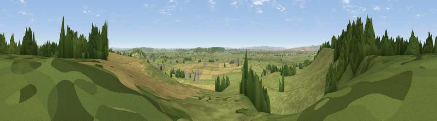

Viewpoint near Greinton
#11566 in England · top 34% of its area beats it · near GreintonThe view, rendered

A 360° render of this exact spot computed from the terrain model, tree cover and land cover — summer colours, afternoon light, calibrated against photographs of famous viewpoints. Real trees, hedges and buildings will differ in detail.
The panorama
Grey silhouette: terrain skyline in each direction (720 bearings, Earth curvature and refraction included). Dashed green: skyline with trees (+15 m) and buildings (+8 m) as obstacles. Blue strip: how far the ground is visible on each bearing.
Where the view opens
Wedge length = distance to the farthest visible ground on that bearing (vegetation-aware). Rings at 10, 25 and 50 km.
What fills the view
70% grassland · 16% woodland · 12% cropland ·
Angular shares of the visible panorama (visual magnitude), not map area. Landscape diversity 0.38 (0–1 Shannon).
Key numbers
More beautiful places nearby
The staircase of upgrades: each row has a higher view potential than everything closer. Driving times are estimates from straight-line distance, calibrated against real road routing — check an actual route before setting out.
| Place | Direction | Drive | Score |
|---|---|---|---|
| Viewpoint near Moorlinch | W · 1 km | ~3 min | 63.8 |
| Socombe Hill | WNW · 2 km | ~6 min | 76.4 |
| Brent Knoll | NNW · 15 km | ~27 min | 77.7 |
| Viewpoint near Axbridge | N · 18 km | ~32 min | 79.2 |
| Bleadon Hill [Loxton Hill] | NNW · 20 km | ~34 min | 79.6 |
| Cothelstone Hill | WSW · 22 km | ~37 min | 82.1 |
| Viewpoint near West Bagborough | W · 23 km | ~38 min | 84.3 |
| Wills Neck | W · 24 km | ~40 min | 85.7 |
51.13078, -2.84634 · source: screening · position refined by local search. Computed location — check access rights before visiting.